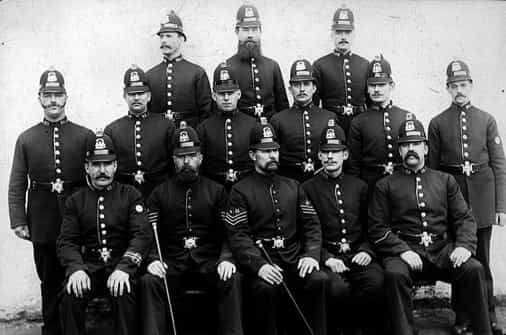

< < < Back
Lesbian Chief Constable Forces Bearded British Cops To Wear Beard Nets – Return Of Kings
The openly lesbian Chief Constable of Gloucestershire Constabulary, a British police force, has foisted draconian new rules on male officers with beards. The force’s new uniform rules will force officers to either wear a “beard net,” or shave their beards entirely.
Suzette Davenport, a open lesbian with links to subversive charity “Common Purpose,” has defended the uniform rules as necessary to ensure an acceptable appearance and “health and safety.” Police representatives have criticised the policy.
Are “beard nets” for male officers a genuine requirement of modern policing or is Suzette Davenport another Cultural Marxist infiltrator doing Gramsci’s work?
Health and safety gone mad
Suzette Davenport, Chief Constable of Gloucestershire Constabulary
In addition to beard nets, Chief Constable Davenport has also introduced other measures in an attempt to clothe the beard-ban in an apparently legitimate pursuit. The Times reports that police staff will have to hide visible tattoos with a plaster, while women “have been urged” to wear less makeup.
It is unclear whether any sanctions will attach to women who persist in caking it on a la Josie Cunningham. An inside source told the The Times: “Some of the female PCs have been wearing so much bronzer that they look like the Tango man. But the blokes will just look silly walking around with a big net on their face.”
The Police Federation, which has lately been at odds with Conservative Home Secretary Theresa May over deep cuts to the policing budget, also criticised the policy. Their spokesman Steve White said: “Police officers have got to look professional and smart when they are on duty, but for goodness sake. There is a big difference between a trimmed goatee beard and a full length Father Christmas Z.Z. Top beard. People just need to be sensible.”
Mr. White conceded that there was some legitimate concern about officers sporting “wild beards” on duty: “They can be used as a weapon,. For someone to grab. That’s why it’s important to keep long hair tied back on patrol. But a beard net? Chief Constables shouldn’t be looking at such draconian measures. There are many much more important things that need to be discussed.”
Across the UK, police forces have discretion to implement their own policies relating to facial hair. In London, for instance, the Metropolitan Police has no qualms about allowing beards. In May, a Met officer, Peter Swinger, became an internet sensation when pictures of his neatly trimmed beard and sculpted moustache went viral on Twitter. He was christened “Hipster Cop,” although he later revealed he only listens to Meat Loaf.
- Hipster Cop
Common Purpose: dodgy political charity
Common Purpose purports to be an “independent, international leadership development organisation” and claims to give people from the private and non-profit sectors “the inspiration, skills and connections to become better leaders at work and in society.”
They do this by running courses for “leaders,” useful idiots in some position of influence in councils or police forces. Common Purpose’s creepy agenda is, in part, revealed in their own website copy, where they claim they help leaders to:
Become better – and significantly faster – at breaking down silos and crossing cultures.
Operate effectively outside their comfort zone.
Deliver complex change.
Common Purpose claims its “experiential work” takes place in “in prisons, trading floors, schools, hospitals, production plants and more.” Nowhere on their website is there any indication what mandate this organisation has to “deliver complex change” and order employees to “Operate effectively outside their comfort zone” in institutions which are funded by the British taxpayer.
Documenting the entire gamut of Common Purpose shenanigans is beyond the scope of this article. Former Royal Navy Lietenant Brian Gerrish has exposed the involvement of Common Purpose at the heart of many a British political scandal, including the fact that numerous prominent figures in the Rotherham child abuse scandal, where 1,600 girls were raped by local “Asian” men while police and council officials did nothing for fear of appearing “racist,” were graduates of Common Purpose leadership courses.
A leader of men?
Suzette Davenport underwent such a Common Purpose “leadership” course while Assistant Chief Constable of Staffordshire in 2006. Davenport had been placed under investigation by the Independent Police Complaints Commission for her handling of a gangland murder investigation in Staffordshire in 2011. Although she was cleared in 2014, Davenport was appointed as Chief Constable of Gloucestershire with the charges against her still outstanding.
It’s difficult to say whether whether the educational charity Common Purpose has exerted undue influence to shoehorn the careerist Davenport into the top job at Gloucestershire Constabulary. A look at Davenport’s profile begs the question, what right-minded system of governance appoints a woman who has spent more of her time in desk-jobs like the “national lead for roads policing in England and Wales” and the vice president of the British Association for Women in Policing, and who cavorts with phony political charities, in charge of the men tasked with keeping law and order on Britain’s streets?
By introducing beard nets for male officers, Suzette Davenport is leading by the example set by Julia Middleton, the creepy, mind-bending NLP nut who was formerly CEO of Common Purpose and was intimately involved in Sir Brian Leveson’s inquiry into press standards, a naked attempt by the British Left to destroy our freedom of the press.
Middleton, in her business book Beyond Authority: Leadership in a Changing World, counselled her adepts to “led beyond authority.” What better way to “lead beyond authority” in public service than by imposing loony policies that alienate front line staff?
The long march through the institutions
Not an Equality and Diversity co-ordinator in sight.
Common Purpose, who have hoovered up close to £500,000 from British police forces alone in fees for training “future leaders,” has been described as a “left wing Freemasonry.” Behind the NLP and management jargon, and the bland business attire, Common Purpose are radically Left-wing.
A radically left-wing gesture like Davenport’s imposition of beard nets is just one more salvo in the agenda to emasculate men in public service, men who are already required to tread on eggshells as they defer the manifold layers of oppressed, wailing minorities above them.
A gesture so emasculating also serves to devalue an old institution like the police, with all its connotations of the preservation of a certain order. Can you imagine Sir Robert Peel’s original bobbies being told to wear nets over their beard for “health and safety” purposes?
Men who are expected to be ready at all hours of the day to mete out violence in order to keep criminals in check cannot be expected to submit to rules dreamed up in a conference room by a jumped-up jobsworth who happens to carry the title of Chief Constable.
If indeed Common Purpose are a malign foreign-influenced cult which seeks, as the conspiracy theorists say, to usurp British state for amalgamation into a federal, social-democratic European state, pursuing the aggressive demoralisation of the police would be an ideal strategy.
It’s a classic case of Gramsci’s edict that progressives should take a “Long march through the institutions.” Let us hope that the undoing of Common Purpose graduate Suzette Davenport and her zany policy of beard nets will come from a minority which has thus far been muscular in demanding religious accommodation: bearded, Muslim police officers.
Read Next: Modern Social Justice Warriors Use The Same Subversion Strategies As The USSR


{kind=link}
{kind=link}